|
| 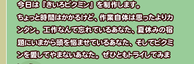 |
| 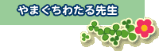 |
 |
・紙
・ペン
・粘土(石粉粘土、紙粘土、ふつうの粘土など、画材屋さんなどで売っているお好きなものをどうぞ)
・銅線(針金でもOK。扱いやすいものにしてね)
・ペンチ(銅線を切ったりします)
・粘土へら(使いやすければなんでもよし)
・アクリル系不透明絵の具（水性）
・筆
・水と筆を洗う入れ物
・筆ふき用タオル
・ビニール袋、ラップなど
・腕 |
|
| 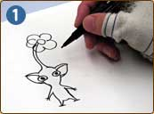 |
１．まず、作りたい大きさのピクミンを描きます。
小さいほど作るのが難しく、大きいほど乾燥時間や骨格の強度が必要になります。 |
| 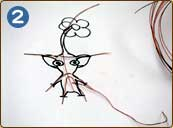 |
２．銅線を長めに切って、ピクミンの骨格作り。
手の部分の銅線は最終的に真ん中の指になります。はみ出ていても、あとで切れるので心配なし。花も骨格を作っておいた方が、崩れる心配がありません。それから完成後にはピクミンを立たせるので、後ろに支えの銅線もたらしておきましょう。
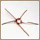 |
| 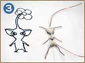 |
３．できた骨格の中心に、チョイチョイと粘土をくっつけます。
使う分だけ取り出して、残りの粘土はラップしておきましょう。くっつけたら、しばらく乾燥タイム。ここでしっかり乾かさないと、あとで大変になっちゃいますよ。 |
| 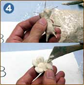 |
４．さらに数回に分けて肉付け作業をします。
形作りには粘土へらが活躍。くっつけては乾かし…の繰り返しですから、乾かしている間に花の部分なども同時進行で作ると効率よくできます。その辺はゲームのピクミンと同じです。 |
| 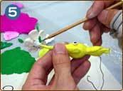 |
５．乾いたら、彩色に入ります。
アクリル系不透明絵の具でレッツ・ペイント！はみ出しても不透明絵の具なので、上から塗っちゃえば大丈夫。 |
| 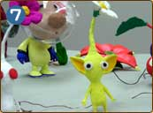 |
７ あとは適宜撮影や友達に自慢などをして、観賞用に楽しみましょう。 |
| どうですか？手作りの作業はやってるだけで楽しいはずなので、ぜひともチャレンジしてみて下さいね。 |
|
 |
ここではオリマーの制作を簡単に紹介。
行程のあちこちが飛ばされていますが、そこはそれ上級者向けなので、大体のことはモヤモヤ〜っと想像して御覧ください。複雑な工程が入りますので、くれぐれも初心者は無理にチャレンジしないようにしましょう。 |
 |
|
・粘土などは大体ピクミンと同じ
・プラ板
・木の板
・熱に強い立体用素材
・切ったり削ったり、いろいろな専用工具多数
・腕 |
| 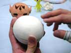 |
２．オリマーのヘルメット作りは、まず熱に強い素材で原型（立体的な型）を作ります。 |
| 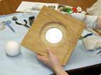 |
３．木の板やボール紙で球体とほぼ同じ大きさの型を作ります。 |
| 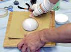 |
４．プラ板に熱を加え、型紙などを使ってむにゅ〜っと押し出します。やまぐち先生の場合は力技でやっちゃいます。 |
| 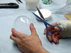 |
５．上下ともにできたら、きれいにカットして穴を開け、アンテナと首が収まるように細工します。 |
| （注）完成したピクミンの作品を他人に譲渡したり、販売することは認められておりません。 |
|
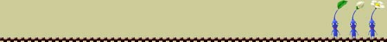 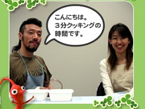
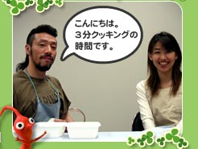